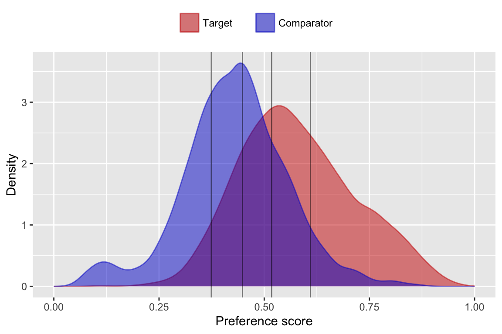
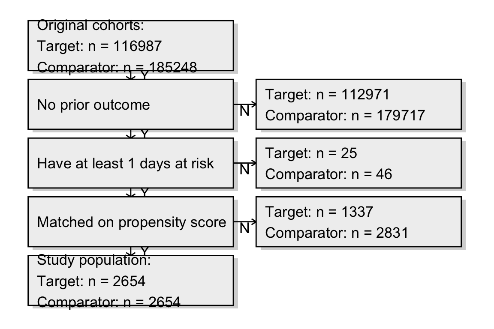
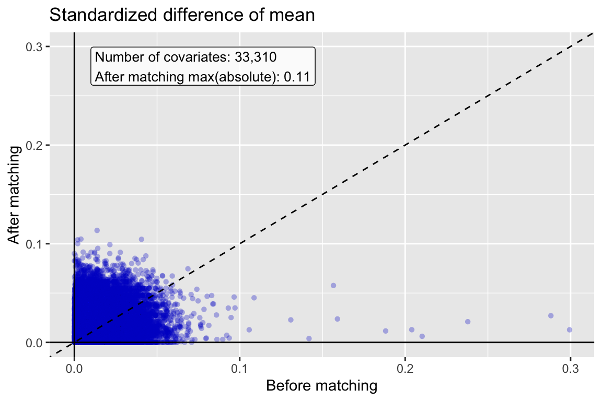
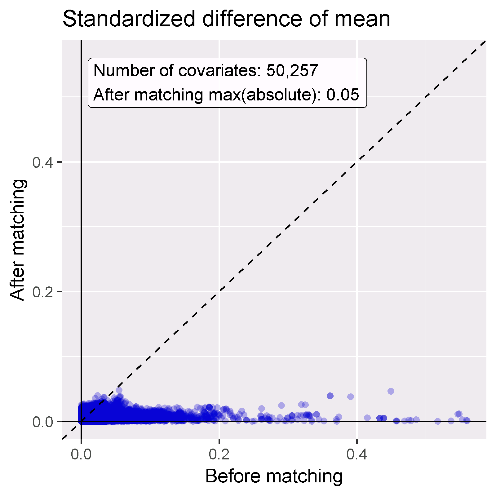
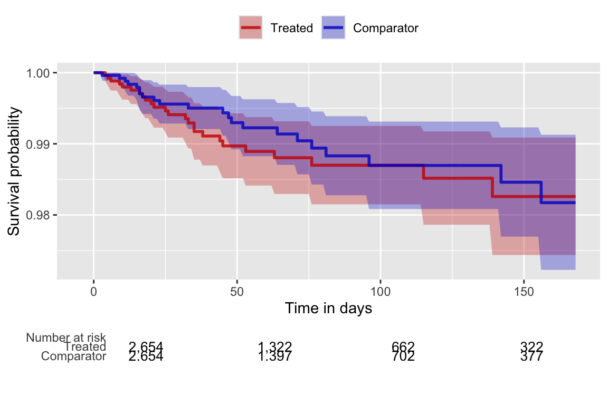

library(Capr)
osteoArthritisOfKneeConceptId <- 4079750
celecoxibConceptId <- 1118084
diclofenacConceptId <- 1124300
osteoArthritisOfKnee <- cs(
descendants(osteoArthritisOfKneeConceptId),
name = "Osteoarthritis of knee")
attrition <- attrition(
"prior osteoarthritis of knee" = withAll(
atLeast(1, conditionOccurrence(osteoArthritisOfKnee),
duringInterval(eventStarts(-Inf, 0)))))
celecoxib <- cs(descendants(celecoxibConceptId),
name = "Celecoxib")
diclofenac <- cs( descendants(diclofenacConceptId),
name = "Diclofenac")
celecoxibCohort <- cohort(
entry = entry(
drugExposure(celecoxib, firstOccurrence()),
observationWindow = continuousObservation(priorDays = 365)),
attrition = attrition,
exit = exit(endStrategy = drugExit(celecoxib,
persistenceWindow = 30,
surveillanceWindow = 0)))
diclofenacCohort <- cohort(
entry = entry(
drugExposure(diclofenac, firstOccurrence()),
observationWindow = continuousObservation(priorDays = 365)),
attrition = attrition,
exit = exit(endStrategy = drugExit(diclofenac,
persistenceWindow = 30,
surveillanceWindow = 0)))
# Note: this will automatically assign cohort IDs 1 and 2, respectively:
exposureCohorts <- makeCohortSet(celecoxibCohort, diclofenacCohort)Comparative cohort methods
Biostat 218
Marc A Suchard @ UCLA
Introduction
In these lectures we will learn about:
Using
CohortMethodto perform comparative cohort studiesLSPS through
FeatureExtractionandCyclopsEvaluating objective diagnostics

Motivating study
What is the relative risk of gastrointestinal (GI) bleeding-related hospitalization within 30 days of celecoxib vs diclofenac treatment in patients with osteoarthritis of the knee?

- Indication (I): osteoarthritis of the knee
- Target (T): celecoxib first-exposure
- Comparator (C): diclofenac first-exposure
- Outcome (O): GI-bleed hospitalization
- Time-at-risk (TAR): exposure initiation + 30 days
- Model specification: LSPS-matched Cox proportional hazards regression
Exposures and outcomes
Standard vocabulary terms:
- Condition: osteoarthritis of the knee (4079750)
- Drug ingredient: celecoxib (1118084)
- Drug ingredient: diclonefac (1124300)
PhenotypeLibrary outcomes
The OHDSI PhenotypeLibrary provides a well-curated GI-bleed-related hospitalization phenotying algorithm
# A tibble: 3 × 4
cohortId cohortName json sql
<dbl> <chr> <chr> <chr>
1 77 Gastrointestinal bleeding with inpatient admission "{\n\t\"cdm… "CRE…
2 1 celecoxibCohort "{\"Concept… "CRE…
3 2 diclofenacCohort "{\"Concept… "CRE…Instantiate cohorts in data source
Use the Eunomia data source to demonstrate (actual results from Optum EHR)
library(CohortGenerator)
connectionDetails <- Eunomia::getEunomiaConnectionDetails(overwrite = FALSE)
cdmDatabaseSchema <- "main"
cohortDatabaseSchema <- "main"
cohortTableNames <- getCohortTableNames(cohortTable = "my_cohorts")
createCohortTables(connectionDetails = connectionDetails,
cohortDatabaseSchema = cohortDatabaseSchema,
cohortTableNames = cohortTableNames)
generateCohortSet(connectionDetails = connectionDetails,
cdmDatabaseSchema = cdmDatabaseSchema,
cohortDatabaseSchema = cohortDatabaseSchema,
cohortTableNames = cohortTableNames,
cohortDefinitionSet = allCohorts) cohortId cohortEntries cohortSubjects
1 77 391 391Notice the limitations of synthetic CDMs
- What happened to the exposure cohorts? (missing indication)
Data pull
# Define which types of covariates must be constructed:
library(FeatureExtraction)
covSettings <- createDefaultCovariateSettings(
excludedCovariateConceptIds = c(diclofenacConceptId, celecoxibConceptId),
addDescendantsToExclude = TRUE)
# Pull data (no need to run)
cohortMethodData <- getDbCohortMethodData(
connectionDetails = connectionDetails,
cdmDatabaseSchema = cdmDatabaseSchema,
targetId = 1,
comparatorId = 2,
outcomeIds = 77,
firstExposureOnly = FALSE, # See note
removeDuplicateSubjects = "keep all", # See note
restrictToCommonPeriod = FALSE, # See note
washoutPeriod = 0, # See note
exposureDatabaseSchema = cohortDatabaseSchema,
exposureTable = cohortTableNames$cohortTable,
outcomeDatabaseSchema = cohortDatabaseSchema,
outcomeTable = cohortTableNames$cohortTable,
covariateSettings = covSettings)Note
These options could have defined in
- the cohorts (fastest, least re-usable)
getDbCohortMethodData()(middle-ground, what we did)createStudyPopulation()(slowest, most re-usable, now deprecated)
Simulating patient-level data from a shareable profile
J&J has kindly shared a profile of these cohorts from the Optum EHR data source (contains no patient-level information) for synthetic tutorial purposes
- Download cohortMethodDataSimulationProfile
- Copy into
ucla-biostat-218/datafor uniform access in class
To load profile and simulate cohortMethodData object
# A tibble: 1 × 3
description targetPersons comparatorPersons
<chr> <int> <int>
1 Original cohorts 116987 185248[1] 302235 Event count Person count
77 557 509Important
Creating a cohortMethodData object from a remote DB takes considerable time; please remember to save object locally.
- Local back-end is
Andromeda
Defining the study population
studyPop <- createStudyPopulation(
cohortMethodData = cohortMethodData,
outcomeId = 77,
createStudyPopulationArgs = createCreateStudyPopulationArgs(
removeSubjectsWithPriorOutcome = TRUE,
minDaysAtRisk = 1,
riskWindowStart = 0,
startAnchor = "cohort start",
riskWindowEnd = 30,
endAnchor = "cohort end"
)
)Study population has 9578 rowsPropensity scores
Building a large-scale propensity score (LSPS) model is straight-forward:
excludeCovariateIdsparameter is not needed; exposure variables removed in data fetch
Uses Cyclops to efficiently fit large-scale regularized logistic regression
- Supports SIMD / multicore / GPU parallelization
Even with parallelization, LSPS models can take a long time. So remember to save the result locally
Propensity score diagnostics
Compute the area under the receiver-operator curve (AUC) for treatment assignment
Plot the propensity score distribution (on the preference-score scale)

Propensity score diagnostics
Inspect the fitted model by showing covariates with non-0 coefficients
- possibly identify drugs of interest that we forget to exclude, or
- other instrumental variables
Remember
we used cross-validated \(L_1\) regularized regression
- most coefficient will shrink to 0
Propensity score diagnostics
Inspect empirical equipoise
Tip
A low equipoise (not seen here) indicates little overlap between T and C populations
Using propensity scores
Match, stratify or weigh our population
CohortMethodalso supports “trimming” to equipoise (less studied)
Stratification:

Matching:
Population size after matching is 5308
Exact matching on covariates
stratifyByPsAndCovariates(covariateIds = c(...))matchOnPsAndCovariates(covariateIds = c(...))
See the effect of matching on the population
Attrition diagram

Important
A little broken when injecting a simulation in the middle
- Who is going to file a
githubissue and pull-request fix?
Evaluating covariate balance
Compute covariate balance before and after PS adjustment
- to check that cohorts are more / sufficiently comparable

Simulation effect
Ellipsoid (most covariates are independent \(\ldots\) unlike reality)
From the original patient cohorts

Evaluating covariate balance

Reporting population characteristics
Most comparative cohort studies report select population characteristics before and after PS adjustment
Generalizability
PS adjustment \(\rightarrow\) make T and C more comparable
Consequence: modified population is less similar to starting data source
How different? And in what ways?
Note
PS matching suggests an average treatment effect in the treated (ATT) analysis. So, getGeneralizibilityTable() automatically selected the T cohort for evaluation.
Follow-up and power
Minimum detectable relative risk (MDRR) reports a relative risk (under a simple Poisson model) for which there is >80% power to detect
targetPersons comparatorPersons targetExposures comparatorExposures
1 3961 5617 3961 5617
targetDays comparatorDays totalOutcomes mdrr se
1 295384 411569 84 1.860237 0.2215545Follow-up and power
Follow-up time distribution statistics
100% 75% 50% 25% 0% Treatment
1 2 21 50 100 492 1
2 2 24 54 105 596 0
Note
Simulated time-at-risk is exponentially distribution
Kaplan-Meier plot

TableGrob (2 x 1) "arrange": 2 grobs
z cells name grob
1 1 (1-1,1-1) arrange gtable[layout]
2 2 (2-2,1-1) arrange gtable[layout]Note
Plot will automatically adjust for any stratification, matching, etc.
Fitting the outcome model
Using a Cox proportional hazards model
- univariate: treatment-effect only
Using prior: None
Using 1 thread(s)
Using 1 thread(s)
Using 1 thread(s)
Using 1 thread(s)
Using 1 thread(s)
Using 1 thread(s)Outcome model fitting status is: OK Estimate lower .95 upper .95 logRr seLogRr
treatment 1.18794 0.67710 2.09780 0.17222 0.2885Fitting the outcome model
Adding interaction terms to the outcome model
Using prior: None
Using 1 thread(s)
Using 1 thread(s)
Using 1 thread(s)
Using 1 thread(s)
Using 1 thread(s)
Using 1 thread(s)
Using 1 thread(s)
Using 1 thread(s)
Using 1 thread(s)
Using 1 thread(s)
Using 1 thread(s)Outcome model fitting status is: OK Estimate lower .95 upper .95 logRr seLogRr
treatment 1.28380 0.46070 3.66231 0.24983 0.5289
treatment * gender = FEMALE 0.89291 0.25872 3.03923 -0.11327 0.6285Tip
- Include gender main-effect as well via
includeCovariateIds = c(interactionCovariateIds)
Multiple TCOs
CohortMethod has been finely tuned to efficiently execute across multiple
- Targets (T)
- Comparators (C)
- Outcomes (O) – think: negative control outcomes (NCOs)
- Analyses (A) – think: TARs, matching vs stratification
by caching intermediate study artifacts
For an example, please see Running multiple analyses vignette
Including negative control outcomes
Define NCOs through condition_occurrence concept IDs
- Hypothyroidism (140673)
negativeControlIds <- c(29735, 140673, 197494,
198185, 198199, 200528, 257315,
314658, 317376, 321319, 380731,
432661, 432867, 433516, 433701,
433753, 435140, 435459, 435524,
435783, 436665, 436676, 442619,
444252, 444429, 4131756, 4134120,
4134454, 4152280, 4165112, 4174262,
4182210, 4270490, 4286201, 4289933)
negativeControlCohorts <- tibble(
cohortId = negativeControlIds,
cohortName = sprintf("Negative control %d", negativeControlIds),
outcomeConceptId = negativeControlIds
)
generateNegativeControlOutcomeCohorts(
connectionDetails = connectionDetails,
cdmDatabaseSchema = cdmDatabaseSchema,
cohortDatabaseSchema = cohortDatabaseSchema,
cohortTableNames = cohortTableNames,
negativeControlOutcomeCohortSet = negativeControlCohorts
)Acknowledging the community
Considerable work has been dedicated to provide the CohortMethod and Cyclops packages
To cite CohortMethod in publications use:
Schuemie MJ, Reps JM, Black A, DeFalco F, Evans L, Fridgeirsson E,
Gilbert JP, Knoll C, Lavallee M, Rao G, Rijnbeek P, Sadowski K, Sena
A, Swerdel J, Williams RD, Suchard MA (2024). "Health-analytics data
to evidence suite (HADES): open-source software for observational
research." _Studies in Health Technology and Informatics_, *310*,
966-970. doi:10.3233/SHTI231108 <https://doi.org/10.3233/SHTI231108>.
<https://doi.org/10.3233/shti231108>.
A BibTeX entry for LaTeX users is
@Article{,
title = {Health-analytics data to evidence suite (HADES): open-source software for observational research},
author = {M. J. Schuemie and J. M. Reps and A. Black and F. DeFalco and L. Evans and E. Fridgeirsson and J. P. Gilbert and C. Knoll and M. Lavallee and G. Rao and P. Rijnbeek and K. Sadowski and A. Sena and J. Swerdel and R. D. Williams and M. A. Suchard},
journal = {Studies in Health Technology and Informatics},
year = {2024},
volume = {310},
pages = {966-970},
doi = {10.3233/SHTI231108},
url = {https://doi.org/10.3233/shti231108},
}To cite Cyclops in publications use:
Suchard MA, Simpson SE, Zorych I, Ryan P, Madigan D (2013). "Massive
parallelization of serial inference algorithms for complex
generalized linear models." _ACM Transactions on Modeling and
Computer Simulation_, *23*, 10. doi:10.1145/2414416.2414791
<https://doi.org/10.1145/2414416.2414791>.
A BibTeX entry for LaTeX users is
@Article{,
author = {M. A. Suchard and S. E. Simpson and I. Zorych and P. Ryan and D. Madigan},
title = {Massive parallelization of serial inference algorithms for complex generalized linear models},
journal = {ACM Transactions on Modeling and Computer Simulation},
volume = {23},
pages = {10},
year = {2013},
doi = {10.1145/2414416.2414791},
}This work is supported in part through the National Institutes of Health and the U.S. Department of Veterans Affairs

Biostat 218 - UCLA - Observational Health Data Sciences and Informatics (OHDSI)